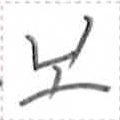
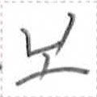

← Previous
Index
Next →
English: He had another glass of alcohol.
Chinese: 他又添了一杯酒。
Chinese (pinyin): Tā yòu tiānle yī bēi jiǔ.
Pekzep (latin transcription): zap2 at ta et2 niep1 no1.
Pekzep (hanzi transcription): 彼加終一杯酒。
Pekzep (linzklā): 


 


Analysis: